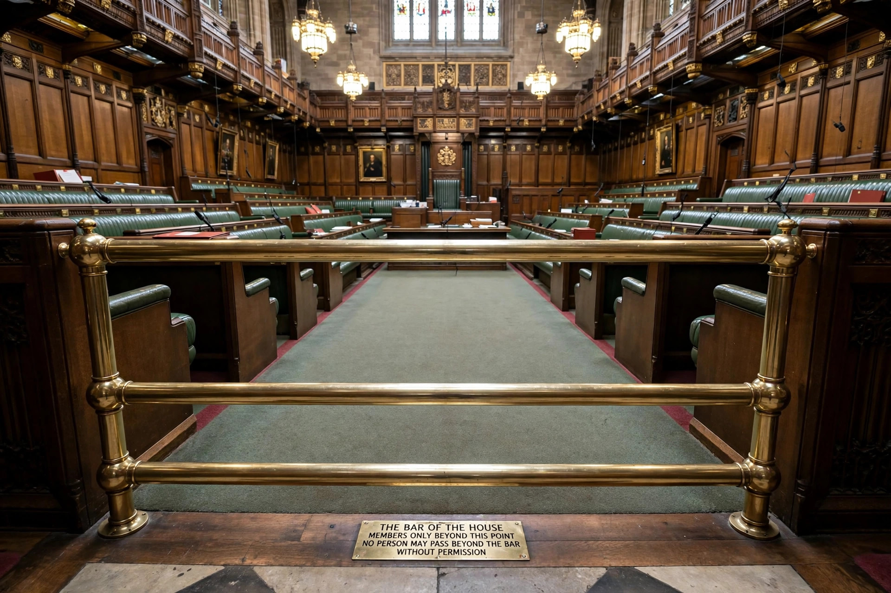

Contempt of Parliament
Contempt of Parliament is the offence of obstructing a legislature in the carrying out of its functions, or of obstructing or impeding a member or officer of the legislature in the discharge of their duty. It arises under parliamentary privilege, the body of rules by which Westminster-style legislatures regulate their own proceedings.

Nature of the offence
Unlike contempt of court, contempt of Parliament is generally not exhaustively defined in statute. Each House decides for itself what constitutes a contempt. Conduct commonly treated as contempt includes:
- Disobeying an order of the House or of a committee
- Refusing to appear before, or to answer questions from, a committee
- Giving false or misleading evidence to the House or a committee
- Leaking the proceedings of a committee before they are reported
- Attempting to bribe or intimidate a member
- Obstructing members in coming to or leaving the House
Penalties
Historically, Houses of Parliament could fine or imprison persons found in contempt, and could reprimand them at the Bar of the House. The power to imprison has largely fallen into disuse in the United Kingdom; the last person imprisoned by the House of Commons was in the nineteenth century. Members themselves may be suspended or expelled. In several Commonwealth countries statutory penalties now supplement the House's own powers.
Notable cases
In 2018 the UK House of Commons found the Government in contempt of Parliament for the first time in modern history, after ministers refused to publish the full legal advice on the Brexit withdrawal agreement; the advice was published the following day. In Canada, the government of Stephen Harper was found in contempt in 2011, shortly before it lost a confidence vote.
See also
Categories: Parliamentary procedure | Westminster system | Contempt